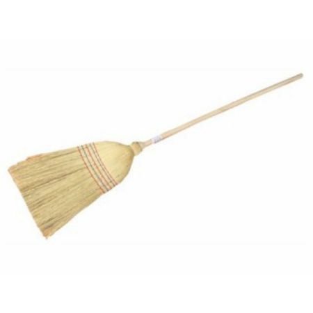

HTML je kratica za HyperText Markup Language, što znači prezentacijski jezik za izradu web stranica.
Hipertekst dokument stvara se pomoću HTML jezika. HTML jezikom oblikuje se sadržaj i stvaraju se hiperveze hipertext dokumenta.
HTML je jednostavan za uporabu i lako se uči, što je jedan od njegove opće prihvaćenosti i popularnosti.
HTML5 prva je nova revizija standarda nastala nakon inačice HTML 4.01, objavljene 1999. godine u suradnji World Wide Web Consortium-a (W3C) i Web Hypertext Application Technology Working Group (WHATWG).
Do 2006. godine su ove dvije grupe radile odvojeno, WHATWG je radio sa welb formama i aplikacijama, a W3C sa XHTML 2.0.
Link za stranicu TVZ-a.
Mail na adresu mvignjevi@tvz.hr
Mail na adresu info i upiti
